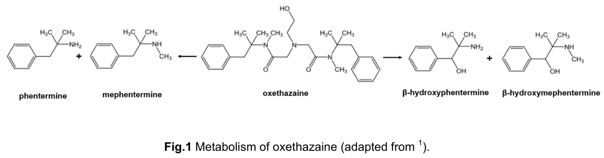

Technical Letters · TL09 (replaces TL2017/02)
Edition v2.0, 2017 (version 2.0) · effective 16 February 2017 · superseded
Retrieved on 25 November 2026 from https://www.wada-ama.org/sites/default/files/resources/files/tl09_oxethazaine.pdf
Editions: v3.0, 2021 (current) · v2.0, 2017
p. 1
OXETHAZAINE
*The approval by the WADA Executive Committee is applicable only to Technical Letters issued after November 2019.
The World Anti-Doping Agency wishes to draw the attention of the Laboratories to the following issue that may affect Laboratory operations. This pertains, in particular, to the detection of the prohibited stimulants phentermine and mephentermine in urine Samples, which may be found as minor Metabolites of the permitted drug oxethazaine (Mucaine ® , Stoin), a topical anaesthetic prescribed for the treatment of acute and chronic gastritis and duodenitis¹ .
Therefore, it is recommended that prior to reporting a result for phentermine and/or mephentermine as an Adverse Analytical Finding, Laboratories should take appropriate steps to evaluate whether the finding is the result of the permitted administration of oxethazaine:
-
Check the Sample Doping Control Form (DCF) for a declaration of use of oxethazaine;
-
Test for the presence of oxethazaine major Metabolites, namely β-hydroxyphentermine and β-hydroxymephentermine. Both of these Metabolites are detected in much higher concentrations than phentermine and/or mephentermine following the administration of oxethazaine (Figure 1)¹ .
If condition 2 is met, the Laboratory should report the result as a Negative Finding and include a comment that phentermine and/or mephentermine were detected but were determined to be the result of the administration of the permitted substance, oxethazaine.

Fig.1 Metabolism of oxethazaine (adapted from 1 ).
Should you have any further questions, please do not hesitate to contact the WADA Science Department.
¹Sigmund G, Seinsch I and Schänzer W. Detection of Phentermine and Phentermine Derivatives as Metabolites of Oxethazine. In: W Schänzer, H Geyer, A Gotzmann, U Mareck- Engelke (eds). Recent Advances in doping analysis (6). Sport und Buch Strauß, Köln, 483- 487, 1999
Retrieved on 25 November 2026 from https://www.wada-ama.org/sites/default/files/resources/files/tl09_oxethazaine.pdf